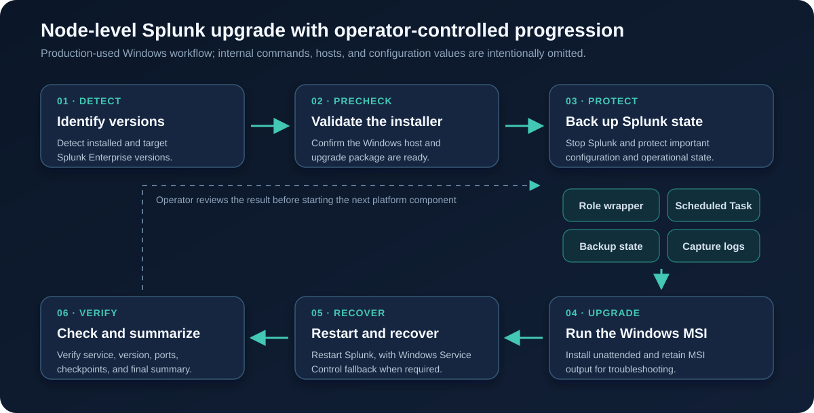

Management roles
Cluster manager, license manager, deployer, and related coordinating components are handled according to dependency order.
Platform Engineering Case Study / Selected Work, 2022–Present
Role-aware upgrade and patch coordination across Splunk platform components on RHEL and Windows, with explicit health gates and recovery checkpoints.
A distributed Splunk platform cannot be maintained as a flat list of servers. Management, data, search, and forwarding roles have different dependencies and validation needs. I used Bash and PowerShell automation to make that sequencing repeatable while keeping operators in control of each transition.
This public case study describes the engineering pattern only. Internal scripts, commands, versions, topology counts, hostnames, configuration values, and change records are not published.
Problem
Host-by-host patching becomes risky when it ignores Splunk roles, cluster state, and dependent services. A server can return from a restart while its Splunk function is still unhealthy. The procedure therefore needed to distinguish a successful command from a successfully restored platform role.
Role Coverage
Cluster manager, license manager, deployer, and related coordinating components are handled according to dependency order.
Indexer peers and search-head members progress in bounded groups with health and stability checks between batches.
Heavy forwarders are validated as data-path components, including service state and expected forwarding behavior.
Workflow

Safeguards and Recovery
The automation surfaced the current host, role, action, result, and next gate so an operator could stop safely when validation failed. Recovery resumed from the last confirmed healthy checkpoint after the exception was addressed.
Engineering Outcome
The resulting approach made role order, health checks, recovery points, and handover state explicit. It reduced reliance on operator memory and made interrupted maintenance easier to reason about, without claiming that automation removed the need for change approval or experienced platform judgement.
This case study demonstrates distributed-role awareness, operational sequencing, failure containment, RHEL and Windows administration, and automation designed around safe recovery.